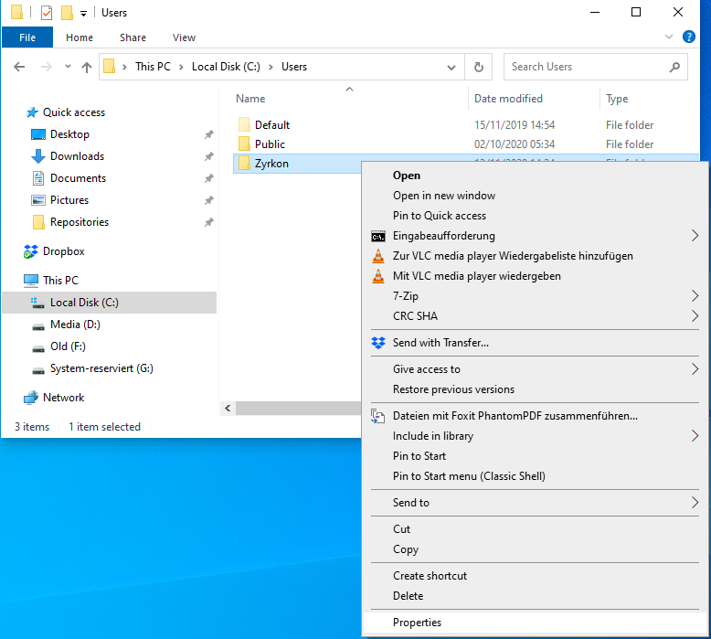

Backup of your Data
Backup in General
Important
If you want to use a USB Flash Drive to install Windows 10 and also use the free space of the same USB Flash Drive, you need to jump setup the Windows installer first, as this will format the Flash Drive. You can then use the available space on the USB Flash Drive.
You are aware that you want to re-format your Main Hard Drive Partition (the one that contains a previous version of MS Windows or another Operating System) with a new File System and a fresh Installation of MS Windows 10. Therefore, you need to save all the old data first.
This excludes all installed Applications and Games, the Windows Registry and Restore Points of your current Operating System. However, your Application Settings can be saved and later restored (for most applications).
Let’s open the overview of your available Hard Disk Partitions under Windows by pressing the ⊞ Win Key on your Keyboard or clicking the Symbol in your Taskbar to open the Windows Start Menu. There, select ‘This PC’, and a new window will show up. Here an example:

Note
If you have only one Hard Drive Partition available, namely ‘Local Disk (C:)’, you have to be acutely aware that installing Windows 10 on this partition will wipe the File System and therefore also delete all data.
All files that need to be copied from ‘Local Disk (C:)’ should be contained in C:\Users\'Username'\. In the Explorer Window that we just opened, double-click on ‘Local Disk (C:)’, then navigate (by double-clicking) to the C:\Users\ Folder. Right-click on your C:\Users\'Username'\ Folder to open the Context-Menu, select (click) ‘Properties’ like so

And a new window will open, showing you the basic Properties of this Folder. Most important is the ‘Size on disk’ value. Here is an example from a live System

This Folder can contain everything from 2-3 GB, up to an obscene amount of data. This data needs to be saved. This means you need at least this amount of available space, somewhere not on ‘Local Disk (C:)’. It can be one of:
- another internal Hard Disk
- an external Hard Disk / SSD
- USB-Stick or
- a Cloud-Service, such as Google Drive, Microsoft Onedrive, Dropbox, etc.
- writeable media, such as writable Blu-ray Discs (needs BD-ROM drive)
Anything is fine as long as it can hold the amount of data shown on your C:\Users\'Username'\ folder.
If there is no such option readily available, then there are two things that can still be done:
- find and clean-up space, see Finding Space
- Split a portion of your File-System into a new, temporary Partition and copy the Folder there. This Partition will not be touched during the installation of MS Windows 10.